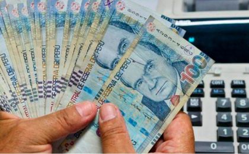
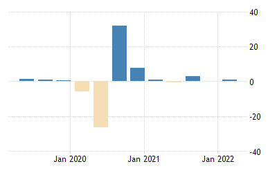

- GPD
GDP stands for gross domestic product and it's in charge of measuring the inputs and outputs in the economy of a country. There’s an average GDP, a per capita GDP, a per capita ppp GDP, a Utilities GDP, a transport GDP, a services GDP, a public administration GDP, a mining GDP, and more.
- Inflation

Inflation in Peru: The inflation recently in Peru has been interesting. It has eased to 8.41% ( it has been straight for 2 months now). In August 2022 it was 8.74%, this is the lowest sense. Monthly, consumer prices were up by 0.67%, following a 0.94% rise in the prior month. This is because of a slowdown in prices of restaurants and hotels (0.63% vs 0.79% in July) and a decrease in transport costs (-0.87% vs 2.49%). In other aspects prices may have increased for food & non-alcoholic beverages with 1.71% vs 1.56%, housing & utilities. With 1.23% vs 0.45%, education with 0.68% vs 0.01%, health with 0.67% vs 0.59%, and more.
- Structures
For five surprising years, from 1968 to 1973, Peru achieved the near miracle of social reform combined with good economic growth. As if in revenge, the classic catastrophes that have plagued so many Latin American countries when they have tried to move in new directions then surged up to stop the process: a foreign exchange crisis, accelerating inflation, paralysed growth, rising unemployment, and intensified social conflict. Was all this necessary? What might have been done better? And what might be done now to resume growth without further taking apart the reforms?
- Resources
Even though, Copper, iron, lead, zinc, bismuth, phosphates, gold, silver, other hard to find metals, and hydroelectric potential are sources for peru, the main resource for peru right now are the services, this feature is about the 60% of the GDP. Peru’s services sector is mainly Telecommunications and financial services, these two by themselves can make up about 40% of the GDP. Peru has still a long way to go especially in modernization, but it has been working on it and with that industry that is about 35% of GDP has also kodernizided making employment increase in the country’s primary industrial areas.
- Growth

What's economic growth? Economic growth is basically what happens when there’s an increase in all goods and services produced by people over a certain period of time. Peru had been declared as an independent nation 201 years ago, it has been growing ecomobility; but not everything has been bad, not at all, today Peru's GDP is 230.00 USD Billion. Peru has been growing slowly since independence, we can see this in its GDP( GDP info above). Peru’s inversions have been increasing. The first one waas of S/ 40,985 millions, 33.2% more than in 2020. The second one had S/ 179,730 millions, 49% more than the other year